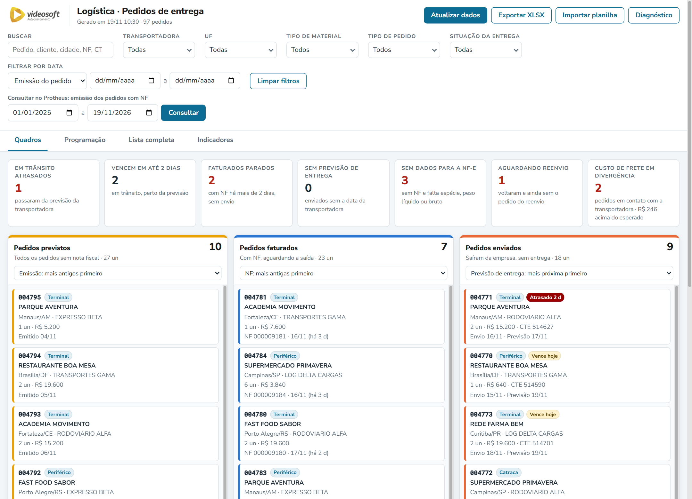
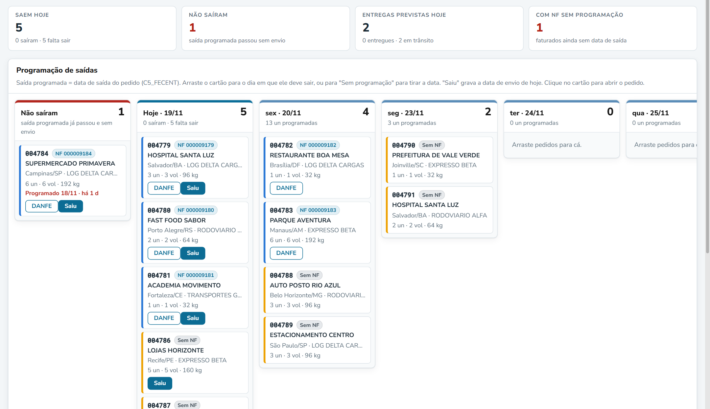
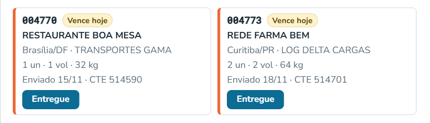
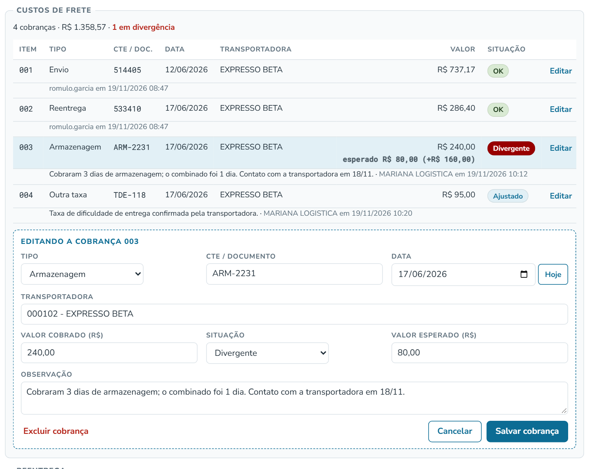
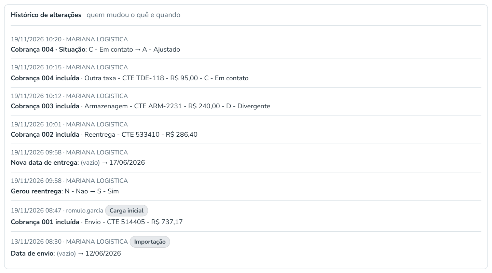

|
| ||||||||||||||||||||
|
Logística · Pedidos de entrega · apresentação Logística no Protheus: os envios saem da planilhaOlá! Como foi feito na RX Pedidos, avançamos para a logística para “exterminar” a dependência de planilhas e ter uma única base de dados e de consulta: o Protheus. A tela Logística · Pedidos de entrega, aberta pelo menu do Protheus, passa a ser o lugar onde cada envio é acompanhado e registrado: da programação da saída até a entrega, com os custos de frete e o histórico de tudo o que foi alterado. Os envios que estavam na planilha ENVIOS 2026 já estão no Protheus, com rastreio de onde veio cada dado. Abaixo, como foi feito, o que a tela faz e os próximos passos. Os prints usam dados fictícios. | ||||||||||||||||||||
| ||||||||||||||||||||
Nada fica fora do Protheus. A tela lê e grava direto no pedido de venda e em duas tabelas novas, por uma API própria. Quem tem a rotina no menu abre a tela, sem outro cadastro e sem outra senha.
A partir de agora, a planilha não precisa mais ser preenchida: o registro é feito na tela, no pedido. Bom saber:
| ||||||||||||||||||||
| ||||||||||||||||||||
Quadros Os pedidos em cinco colunas: previstos (todos os sem NF), faturados aguardando a saída, enviados, entregues e retornados. Cada coluna tem a sua ordem (mais antigos ou mais novos primeiro). No topo, os alertas: em trânsito atrasados, vencem em até 2 dias, faturados parados, sem previsão da transportadora, sem dados para a NF-e, aguardando reenvio e custo de frete em divergência. A busca acha o pedido pelo número, cliente, cidade, NF, CTE, número de série ou telefone.  | ||||||||||||||||||||
Programação As saídas por dia, pela data de saída programada do pedido: não saíram, hoje, os próximos dias úteis e sem programação. Para reprogramar, basta arrastar o cartão para outro dia. O botão Saiu grava a data de envio de hoje, e o DANFE imprime a nota direto do cartão.  | ||||||||||||||||||||
Mais abaixo, as entregas previstas para hoje: os pedidos em trânsito com a previsão da transportadora para hoje. O botão Entregue grava a data de entrega de hoje (a nova data, quando houve reentrega) e o pedido passa para Entregues.  | ||||||||||||||||||||
Detalhe do pedido Um clique no pedido abre o detalhe. No topo, cada nota fiscal com o botão Imprimir DANFE. Depois, o formulário: dados para a NF-e (antes da nota), envio e entrega, custos de frete, reentrega e retorno. Salvar grava só o que mudou.  | ||||||||||||||||||||
Custos de frete Logo abaixo de “Envio e entrega”, a lista das cobranças do pedido com o total. Um pedido pode ter várias: o CTE do envio, cada reentrega, armazenagem, devolução ou outra taxa. Quando o CTE chega com valor diferente do combinado, a cobrança é marcada como Divergente, com o valor esperado e uma observação do contato com a transportadora. Depois vira Em contato, Ajustado ou Aceito como veio. O alerta dos Quadros e o filtro “Custo de frete em divergência” mostram tudo o que ainda está em aberto.  | ||||||||||||||||||||
+ Adicionar cobrança e Editar abrem o formulário ali mesmo e gravam na hora, sem fechar o pedido. A exclusão pede confirmação e fica registrada no histórico.  | ||||||||||||||||||||
Histórico de alterações No fim do detalhe, o histórico do pedido: cada campo alterado, de quanto para quanto, por quem e quando. O que veio da planilha aparece como Importação, e os CTEs copiados para a tabela nova, como Carga inicial.  | ||||||||||||||||||||
Cliente, frete e itens O frete cobrado no pedido contra o custo das cobranças, os dados do cliente com o telefone do cadastro (com link para discar) e os itens com os números de série.  | ||||||||||||||||||||
Lista completa e Exportar XLSX A Lista completa traz um item por linha, com todas as colunas e ordenação.  | ||||||||||||||||||||
O botão Exportar XLSX gera a planilha na hora, escolhendo o que sai: todos, previstos, faturados, enviados, entregues, atrasados, retornados ou com custo em divergência, com ou sem os filtros da tela. As abas são Pedidos, Itens e Custos de frete, em formato de tabela do Excel. A planilha passa a ser só uma saída: a base é o Protheus.  | ||||||||||||||||||||
Indicadores Entregas no prazo e atrasadas por mês (pela previsão da transportadora), motivos dos atrasos, comparação e ranking das transportadoras (% no prazo, atraso médio, tempo de entrega, custo médio, % reentrega, % com custo em divergência) e o frete acumulado por transportadora.  | ||||||||||||||||||||
E o custo de frete × frete cobrado por mês, com os pedidos em que o custo passou do cobrado do cliente. O custo soma todas as cobranças: CTE, reentregas e taxas.  | ||||||||||||||||||||
Como tudo está no Protheus e é servido por uma API, outras ferramentas podem ler os mesmos dados, sem planilha e sem digitar de novo. Um exemplo é o CRM: dentro do cliente, o vendedor consulta onde está cada pedido, se já saiu, a transportadora, a nota, o CTE, a previsão e a data de entrega. Ele acompanha a entrega sem precisar perguntar à logística, e todo mundo olha para o mesmo dado. | ||||||||||||||||||||
O próximo passo é integrar as APIs das transportadoras:
| ||||||||||||||||||||
|
Qualquer dúvida ou ajuste, é só me chamar. Fico à disposição. |